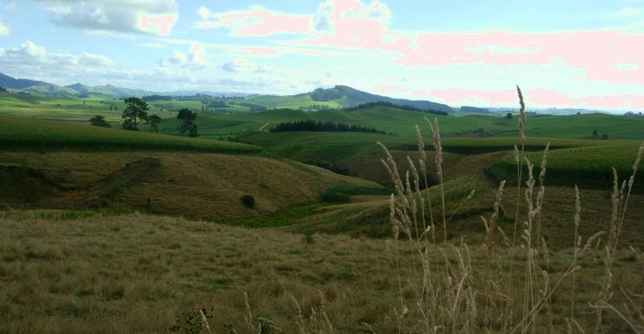

North Island
Visited North Island (Maori for Land of Unbelievable Humidity) on the way from Chrissie in the States back to work in Canberra. Will do South Island on the way back to the States next December. Decided to prioritise the trip as follows: 1 - Anything having to do with magma 2 - Ring filming sites 3 - Cool cities No beaches--there are plenty of great beaches in Australia.

Central North Island Countryside
I'm very glad I saw LOTR before I saw New Zealand. When we left the Shire and panoramas opened up, I was ecstatic because it looked just like Middle Earth, that is, like Earth but not really. The hills had the wrong shape, the trees looked foreign, it was clearly Elsewhere. Seen in the reverse order, it would simply have looked like New Zealand.
I understood the weather when I saw that storms come up from the pole, cut through Tasmania (famous in Oz for unending rain), then through New Zealand on its way into the South Pacific to create cyclones. I'd uselessly tried to rearrange events based on weather forecasts, which were totally useless, even as little as 8 hours in advance. So I ended up seeing the Gloworm Caves and getting my tattoo on the only really sunny days.
History: The Maoris fought the English immigrants much more fiercely than the the American Indians or Australian Aborigines. The Treaty of Waitangi (1840) ceeded New Zealand to the Crown, while giving the Maoris land and fishing rights. As with most treaties, getting it signed required vague wording that is being fought out in courts to this day. Most of the place names are Maori (creating a few misfires such as Puke St.). Official signs are in Maori and English, which is way cooler than French and English in Quebec.
A technical writer friend tells me there are a lot of typos in the site. But he didn't tell me where, so you're stuck with them.
In some places I have movie links that may be broken. Yahoo restricts me to 5MB per upload, and it's proven difficult to work around. If you want to see the geyser erupt or the panorama of Wellington, let me know and I'll email a copy.
Cities
Middle Earth
Here are a very few of the 150+ filming sites. Many are on South Island. Some, like the slopes of Mt. Doom, are accessible only via helicopter. But many e.g., Lothlorien, Rivendell and Isengard, are uninteresting without the sets and mattes.
Nature
| Wai-O-Tapu Thermal Reserve | Buried Village & Gloworm Cave | Whakarewarewa Thermal Reserve |
Other